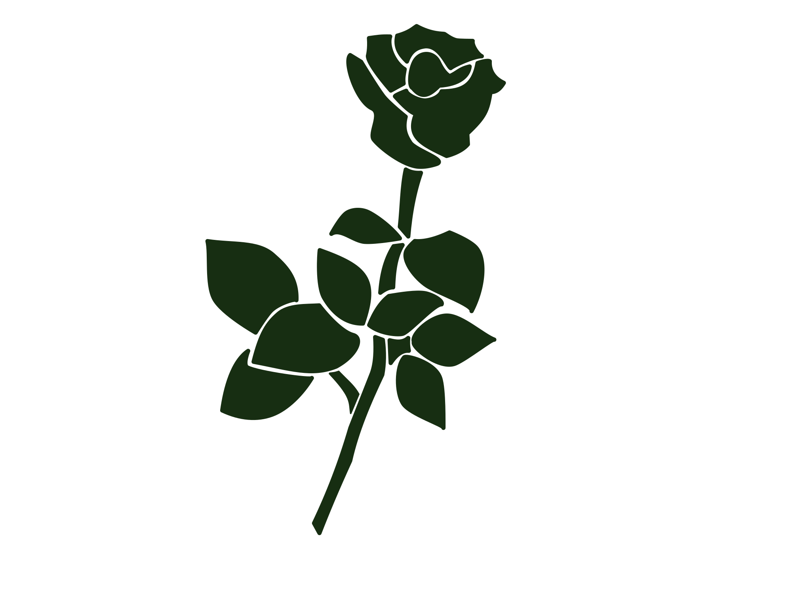
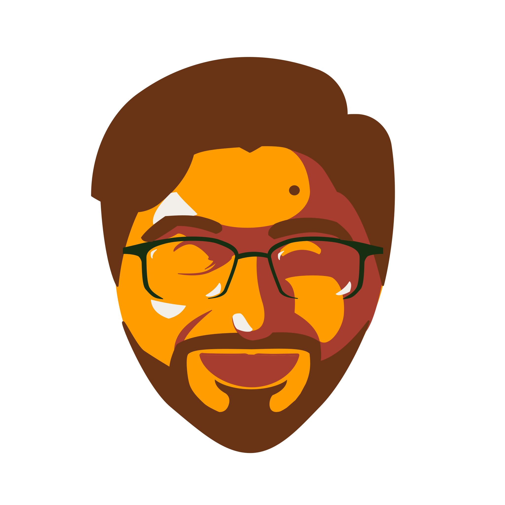

01 / FEATURED PROJECT
Court Case Management System
Exploring the architecture behind a modern case management system, from domain modeling and identity resolution to relational data design and backend development.
View project details

SOFTWARE · DATA · SYSTEMS
Hi! I'm Dany De La Rosa — a creator at heart who found an unexpected medium in software.
Explore my work

WHAT I'VE BEEN BUILDING
Exploring the intersection of software, data, and thoughtful system design.
01 / FEATURED PROJECT
Exploring the architecture behind a modern case management system, from domain modeling and identity resolution to relational data design and backend development.
View project details
02 / DATA ENGINEERING
Automated data processing workflows using Python and SQL.
View project
03 / SOFTWARE DEVELOPMENT
This project is under construction. But not to worry, it will be completed soon!
View project
THE GUY BEHIND THE CODE

I'm a creator at heart who found an unexpected medium in software.
I was born and raised in Southwest Michiganin a first-generation Latino family. Growing up, I often felt caught between different worlds, and I found a lot of comfort in drawing, anime, video games, nonfiction books, and other creative outlets. My first introduction to programming was toward the end of high school, in an elective Python class. At the time I figured I'd eventually pursue something more traditionally creative, like art or music.
Years later, I found myself in technology and discovered something I hadn't appreciated when I was younger: software development is a creative discipline. Like art, it gives you principles and constraints to work within while still leaving room to think, experiment, and create. Two people can approach the same problem using the same engineering principles and arrive at completely different solutions.
My interest in backend development grew naturally through my work. In an earlier role, I started writing scripts to solve problems and became increasingly interested in what was happening underneath the code — how queries execute, how applications should interact with databases, and how different parts of a system should be separated. I found myself thinking beyond “Does this work?” and more about “How should this work?”
That mindset has continued into my current role as an Application Support Analyst, where I've gained hands-on experience with JavaScript, BIRT reporting, SQL, and SSMS, including thinking about query performance and the impact of my work on production systems. Over the past four years, I've progressed from contract PC Replacement Technician to Help Desk, Application Support Specialist, and now Application Support Analyst. Each step has given me another layer of technical experience and pushed me closer to the kind of engineering work I want to build a career around.
I wouldn't call technology a passion of mine. But I've developed a genuine interest in the craft of building and understanding software, and I've realized that the same part of me that once wanted to create through art now enjoys creating through technical solutions.
I'm still a creator at heart. Software just happens to be one of my favorite mediums.
LIKE WHAT YOU SEE?
Interested in collaborating or discussing an opportunity? I'd love to hear from you.
Get in touch